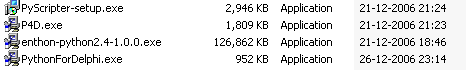

december 2006
Python - CodeEditor
Introduction
CAD / flowchart
355.png (PNG Image, 646x512 pixels)
CAD Tool Blender Caliper Script at BlenderNation
UML
Frequently Asked Questions [MyHDL]
misc
PyUSB - A Python native interface port of the FTDI D2XX USB driver
simulator
EVBU -- An Open Source 68HC11 Simulator
EVBU -- An Open Source 68HC11 Simulator
A Simple Python CPU Emulator » The Zana Zen
Pyro, Python Robotics PyroScreenShots
Pyro, Python Robotics The_20Pyrobot_20Simulator
XCircuit drawing program home page
13-grigoletti.pdf (applicationpdf Object)
Session6c3.pdf (applicationpdf Object)
Frequently Asked Questions [MyHDL]
tutorials
scipy
numpy
MatPy = old
PyMat
PyMat is an interface between NumPy and a MATLAB engine session. It can be used to support NumPy's functionality with the features of MATLAB. An example module is included that presents a very simple interface to MATLAB's plotting functions. This allows you to, for example, plot NumPy arrays in a MATLAB plot window.
Pymat22.zip [14K] for Python 2.2 and Matlab 6.5 (contributed by Axel Kowald)
Python for Delphi
There are several packages available, they differ in version and in the additional examples that are included. For the first start I've chozen P4D.exe , this is version 3.32 and it detected during installation I had Python 2.4 installed, so there were the components created for.

relevant links:
This is the Python for Delphi page !
Andy Bulka's Patterns & Articles
Using Python components.
1) A simple Python evaluator: (Kylix ready)
TPythonGUIInputOutput
TPythonEngine
PythonEngine1.ExecStrings( Memo1.Lines );
2) Evaluate a Python expression (Kylix ready)
WARNING !!! The evaluation of an expression works only for arithmetic expressions and not for instructions ! The use of variables and functions is of course allowed but constructs like for, def, class, print, import... are not allowed. Use Exec... instead (like ExecStrings).
TPythonGUIInputOutput
TPythonEngine
3) Defining Python/Delphi vars (simple case): (Kylix ready)
Warning ! If you access the Python/Delphi vars with the variant interface, you'll have to use simple types like integers, floats or strings.If you want to use any Python object type, don't use variants, but use the Extended interface OnExtGetData, OnExtSetData and the ValueObject property. But in this case, be careful with the reference counting ! Study carefully the Demo4 example.
TPythonDelphiVar
TPythonEngine
ShowMessage( 'Value = ' + PythonDelphiVar1.ValueAsString );
So, you can read/write the variable's content in both Python and Delphi !
4) Defining Python/Delphi vars (advanced case): (Kylix ready)
see notes example 3
PythonDelphiVar1 object, show its events
Run the application, and type in the source window:
print "Current value of var test is: ", varname
varname.Value = "New value set by Python"
print "-----------------------------------------------------"
class C:
def __init__(Self, Arg):
Self.Arg = Arg
def __str__(Self):
return "<C instance contains: " + str(Self.Arg) + ">"
print "Current value of var object is: ", object
object.Value = C("Hello !")
print "New value is:", object
Click on the Execute button, and look at the Edit1 component.
--------------------------------------------------------------
5) Defining a new Module: (Kylix ready)
--------------------------------------------------------------
Drop a TPythonModule
Connect its Engine attribute to PythonEngine1
Change the ModuleName attribute to "spam"
Select its events, and Double-click on "OnInitialization" and add:
with Sender as TPythonModule do
AddMethod( 'foo', spam_foo, 1, 'foo' );
Before the PythonModule1Initialization procedure, add:
function spam_foo( self, args : PPyObject ) : PPyObject; cdecl;
begin
with GetPythonEngine do
begin
ShowMessage( 'args of foo: '+PyObjectAsString(args) );
Result := Py_None;
Py_IncRef(Result);
end;
end;
Run the application, and type in the source window:
import spam
print spam.foo( "Hello", 1 )
Click on the Execute button, and look at the Message dialog.
--------------------------------------------------------------
6) Defining a new Type: (Kylix ready)
--------------------------------------------------------------
A new type is more complex, because you must define a record
that contains the objects attributes. It must always contain
the two attributes at first:
ob_refcnt : Integer;
ob_type : PPyTypeObject;
Drop a TPythonType
Connect its Engine attribute to PythonEngine1
Change the TypeName attribute to "MyObject"
You must define procedures that will handle all kind of access
to the object: Destructor, Get attribute, Set attribute, print...
You must define its own methods
You'll need a function in a module that will create an
instance of that object.
You must set the attributes of the Type record.
Add the Objects's methods to the PythonType.
Look at the demo6 for more information about this.
There's a complete implementation of a new type
object "Point", which contains two attributes (x and y),
and one method (OffsetBy).
The object is created by the function CreatePoint of
the spam module.
--------------------------------------------------------------
7) Using Delphi methods as Python functions (Kylix ready)
--------------------------------------------------------------
This demo is the same as the previous one (6) but it introduces
the use of Delphi methods instead of global functions for the
python functions of Modules or Types.
Note: Look at (21) for the new Events feature, which will ease the
declaration of new Python functions.
--------------------------------------------------------------
8) Using Delphi classes for new Python types (Kylix ready)
--------------------------------------------------------------
Warning for Python version below 2.0:
Python must be correctly installed otherwise this demo
will fail. It needs indeed the file exceptions.py
located in the lib folder of the Python distribution
in order to initialize correctly the Exceptions as
Python objects instead of strings.
If you want to distribute your application with the
Python Dll, don't forget to copy this file (and maybe the
whole lib folder) and use the event OnPathInitialization
of TPythonEngine to initialize properly your Python
environment.
Note: Look at (21) for the new Events feature, which will ease the
declaration of new Python methods.
Note: Loot at (26) if you're interested in building a new type that
may be subclassed inside Python.
Note: Look at (32) if you're using Delphi7 or later as it can make
your life much easier when trying to expose a regular Delphi
class to Python. See also the WrapDelphi.pas unit.
Look at demo8, it's a default template that yous should follow
if you want to build new Python types.
Create a new project.
Drop a TRichEdit
Drop a TPythonGUIInputOutput for displaying Python's messages
Drop a TPythonEngine on the form.
Connect the attribute IO of the TPythonEngine to the TPythonGUIInputOutput.
Connect the attribute Output of TPythonGUIInputOutput to the TRichEdit.
Drop a TMemo
Drop a TButton
Double click on it and add:
PythonEngine1.ExecStrings( Memo1.Lines );
Drop a TPythonModule
Change its property "ModuleName" to "spam"
Connect it to the PythonEngine1
Double-click on the property "Errors"
Add an error
name it "PointError"
set it to etClass
Add an error
name it "EBadPoint"
set it to etClass
Double-click on "ParentClass"
Set Name to "PointError"
Drop a TPythonType
Connect it to the PythonEngine1
Change the property "TypeName" to "Point"
Connect the property "Module" to the PythonModule1
Define the services you'll use in the property "Services"
Double-click on its event "OnInitialization" and add:
PythonType1.PyObjectClass := TPyPoint;
--------------------------------------------------------------
9) Making a Python module as a Dll (Kylix ready)
--------------------------------------------------------------
The demo9 contains 2 delphi projects: one for the application
and one for the dll. The dll extension is renamed as ".pyd".
The application script does an "import demodll" that will try
to find first an internal module, then a "demodll.dll" or a
"demodll.pyd".
Python executes a procedure named initXXX in the dll, where
XXX must be the name of the module (in this case it will be
"demodll"). So, your dll must export only one procedure like this:
procedure initXXX; cdecl;
In the function initXXX of our DLL, we create an instance of
TPythonEngine and we define its property "AutoFinalize" to False,
because TPythonEngine must absolutely not call the function
Py_Finalize. After you call its method LoadDll.
Then we create an instance of TPythonModule, we setup its name,
the engine used, add the methods and finally call Initialize.
At last, you add a finalize section in order to free the two instances.
WARNING !!! Python cares about letter case, so check if the
resulting Dll is "demodll.pyd", all in lowercase, otherwise
the "import demodll" statement won't find the module.
--------------------------------------------------------------
10) Mapping Delphi VCL components inside Python.
--------------------------------------------------------------
Full mapping of TTable and TQuery that lets you access
Database from inside Python as you would do it with Delphi.
Look at the demo, I tried to put some comments and I think it is
self-explicit.
It shows you how you can use Delphi class inheritence for
making new Python types and avoid duplication of code.
It shows you how to use some special object services like
sequences.
It shows you how you can subclass any Python object, using
a Proxy class (see example 6).
--------------------------------------------------------------
11) Using Threads inside Python. (Kylix ready)
--------------------------------------------------------------
Look at Demo11.
Note: there's a bug with the multi-interpreter method.
if you click 3 times on the button "three interpreters"
then 1 time on the button "one interpreter", you'll get
an exception that will terminate the application.
So, use the "one" interpreter method, it's safer.
--------------------------------------------------------------
12) Using PythonAtom. (Deprecated since Delphi 6, See VarPyth instead)
--------------------------------------------------------------
Look at Demo12
Simply add the PythonAtom in the uses clause, declare a new var of type OleVariant
and call the function getAtom( any Python object ). It will return a new OleVariant
that will let you access properties or methods very simply, as you would do with Word !
var
pObject : PPyObject;
myAtom : OleVariant;
myString : String;
begin
pObject := ... a python object ...(using a TPythonDelphiVar.ValueObject for example);
myAtom := getAtom(pObject); // This is the magic object
myAtom.myMethod();
myString := myAtom.myProperty.myProperty2;
myAtom.myProperty.myProperty3:='Olivier';
ShowMessage(myAtom.myMethod2('Olivier'));
ShowMessage(myAtom.myListProperty[3]);
// Or anything ! Note that type conversion are automatic !
end;
Note that if you use TPythonDelphiVar.ValueObject, you must decrement the reference on
the returned object !
--------------------------------------------------------------
13) Using TPythonDatabase.
--------------------------------------------------------------
Look at Demo13
This demo is based on the Demo10, but uses the TPythonDatabase
component that was built from the Demo10, in order to let
you easily access a Database from Python.
--------------------------------------------------------------
14) Making a Dll with TPythonDatabase
--------------------------------------------------------------
Here's how you can make a Dll that will contain the Database components
in order to let you access a database from any Python application, even
from the Python console !
Please, compile the database.dpr project prior to Project1.dpr !
If you want to use this module, from anywhere, you must copy the file
database.pyd in a folder that's in Python's path, like ...\Python\Lib
WARNING !!! Python cares about letter case, so check if the
resulting Dll is "database.pyd", all in lowercase, otherwise
the "import database" statement won't find the module.
--------------------------------------------------------------
15) Using a TDataset descendant with Python, except TTable and TQuery.
--------------------------------------------------------------
If you're using a special Dataset object, like TClientDataset or
a FlashFiler table, this demo is for you !
Note, that this will only allow you to use the TDataset interface and
not the methods introduced in the TDataset subclass ! If you need to,
then study the unit pyDBTables.pas and do the same as we do for a
TTable or a TQuery !
Add the pyDB unit to your uses clause.
In the module event OnAfterInitialization, of your dedicated module,
or simply just before you execute your instructions, do the following things:
- Instanciate your Delphi dataset subclass: ds := TClientDataset.Create(nil);
- Initialize it properly: ds.DatabaseName := 'DBDemos';
ds.TableName := 'animals.dbf';
ds.Active := True;
- Create the Python interface: obj := NewDataset(ds, True)
where 'True' means that the Python wrapper will own the delphi dataset object and
free it. It avoids memory crashes if the TDataset subclass is destroyed
before the Python engine is finalized. If you encounter such a problem,
you can use the PythonEngine1.Finalize explicit method before any object is
destroyed in your form.
- Define a var containing our object : PythonModule1.SetVar( 'Dataset', obj );
where PythonModule1 is the TPythonModule object you want to use
'Dataset' is the var name in the module that will contain our dataset object
obj contains the Python object interface
- Don't forget to decrement 'obj': GetPythonEngine.Py_XDecRef(obj);
This demo shows you how to add a function to your module, that will allow your
Python script to create its own instances of the Dataset subclass (look at the
DoCreateTable function).
--------------------------------------------------------------
16) Using a TDelphiVar or Module methods ? (Kylix ready)
--------------------------------------------------------------
Here are examples of 2 differents solutions that let you read/write properties stored
in your Delphi application (this examples were posted on the Python for Delphi
mailing list) :
- The first example uses a DelphiVar that contains a dictionary.
- The second example uses a new modules (props) that publishes 3 functions
GetProperty, SetProperty and GetPropertyList
In both examples, I show you how you can simplify any implementation with a
Proxy class that will use either the DelphiVar or the module functions.
17) Using variant arrays of 2 dimensions (Kylix ready)
This demo creates a variant array of 2 dimensions, then converts it to a Python object (a list of sub lists) with the method VariantAsPyObject. The Python list is then converted back to a variant array with PyObjectAsVariant, but notice that it is not an array of 2 dimensions, but an array of variant arrays. Because when PyObjectAsVariant converts a Python sequence it returns a variant array and this method is recursive. So, if we have another sequence as an item, we'll get an array that will be stored in the array. This way lets you have any depth of sub-sequences, but you can only convert 1, 2 or 3 dimensions variant arrays to Python sequences.
18) C++ Builder: using the Python Dll in a console application
Create a new project application using the console
Edit the project options and adds the folder <INSTALLDIR>\Components\Include to
the Include directory.
Adds #include <python.h> at the beginning of your source
followed by: using namespace Py;
Drop the py15.lib to your project folder and add it to the project
Write Python code and compile !
--------------------------------------------------------------
19) C++ Builder: this is a replicate of the Delphi Demo05
--------------------------------------------------------------
--------------------------------------------------------------
20) C++ Builder: this is a replicate of the Delphi Demo08
--------------------------------------------------------------
--------------------------------------------------------------
21) Using Events in TPythonModule or TPythonType (Kylix ready)
--------------------------------------------------------------
This demo is inspired of the demos 7 and 8, but uses the new feature of the TPythonModule
and TPythonType: now there's a collection property called Events, which lets you add
easily your own Module functions, or Type methods.
Simply double click on the Events property, then add a new CollectionItem, name your event, add
a DocString if you want to document your function, and double click on the OnExecute event,
then write the code to implement your function. That's all !
Note the difference with a TPythonType: you don't use the Adjust procedure, put simply use the
PythonToDelphi function to convert the PSelf argument to a Delphi instance pointer.
--------------------------------------------------------------
22) Using Threading, Windows Console and Command line arguments (Kylix ready)
--------------------------------------------------------------
When doing multithreading, be sure that the calling thread finishes after all created threads,
otherwise your application will hang ! This is easily done by using the threading module of the
standard Python distribution, and calling the "join" method of the thread objects.
If you want to display messages in your threads, you can't use the PythonForDelphi redirection to
a memo, as the VCL is not thread safe !
So, a simple way is to use the new TPythonEngine.UseWindowsConsole property which will use a
Windows threadsafe console.
In this demo, we use the sys.argv list which contains the command line arguments.
Note for Python 1.5.2:
if you're using the threading module, you should do a TPythonEngine.Finalize in the
OnClose event of your form, otherwise you'll get an access violation ! I don't know why ?
Because it works fine with new 1.6 version !
--------------------------------------------------------------
23) Using Threading and Delphi log window. (Kylix ready)
--------------------------------------------------------------
This is the same demo as Demo22, but we use the Delphi log window for displaying Python output,
instead of the Windows console.
The main advantage is that you can scroll the log window, and save its content to a file,
but the drawback is that you must run Delphi !
To do it, you must drop a TPythonInputOutput component (instead of the TPythonGUIInputOutput),
connect it to the TPythonEngine through the IO property, double-click on the TPythonInputOutput.OnSendData
event and write:
procedure TForm1.PythonInputOutput1SendData(Sender: TObject;
const Data: String);
begin
OutputDebugString( PChar(Data) );
end;
--------------------------------------------------------------
24) Using TAtomPythonEngine (Deprecated since Delphi 6, See VarPyth instead)
--------------------------------------------------------------
This demo describes how you can make Delphi methods that are going to be
used from python without even thinking about conversion and reference
counting by the use of PythonAtoms and AtomPythonEngine. The Demo is a
modified version of Demo 5, but the techniques described here can be used
in aspects of python/delphi programming as well.
The demo describes the use of the PyObjectAsVariant method defined in
AtomPythonEngine. It returns PythonAtoms when the Python object isn't of a
standard variant type (string, integer, array etc.). AtomPythonEngine is a
drop in for PythonEngine with all functionality inherited except for the
PyObjectAsVariant that is extended as stated above.
The VariantAsPyObject of PythonEngine is also shown to work on
PythonAtoms.
--------------------------------------------------------------
25) Using VarPyth.pas (Kylix ready)
--------------------------------------------------------------
Here's a unit test for demonstrating most of what you can do with the
new custom variant that wraps up the Python objects.
--------------------------------------------------------------
26) Demo8 revisited to allow the new Python type to be subclassed
--------------------------------------------------------------
Warning! Type subclassing is allowed only in Python 2.2 and later.
Note: Look at (32) if you're using Delphi7 or later as it can make
your life much easier when trying to expose a regular Delphi
class to Python. See also the WrapDelphi.pas unit.
You should not override GetAttr and SetAttr anymore and you should not
select the Basic services flags [bsGetAttr, bsSetAttr].
Instead, simply select the flags [bsGetAttrO, bsSetAttrO] and the class
TPyObject does simply call PyObject_GenericGetAttr in GetAttrO
and PyObject_GenericSetAttr in SetAttrO.
The Python Generic Get/Set functions will use new slots introduced in
the type object for specifying a list of members (class fields),
a list of get/set functions (like properties in Delphi) and a list
of methods. That way a subclass can introduce its own members/get,set/methods
and call the others coming from the base classes.
So, now You can override the class methods RegisterMembers and RegisterGetSets
for allowing your type to be subclassed and offer attributes and
methods to its subclasses.
This demo declares two members for x and y fields, and one get/set for
accessing the name fields which is a Delphi string and thus needs to
be converted from/to Python object.
The old way of registering methods has not changed at all.
--------------------------------------------------------------
27) Container indexing
--------------------------------------------------------------
#index:
s[0]
#slice
s[0:2]
#ellipsis
s[...]
#extended slice
s[0:2:2]
#multidimensional slice:
s[10, 10:20, 20:100:5, ...]
--------------------------------------------------------------
28) Iterator (Kylix ready)
--------------------------------------------------------------
This demo implements a new container type wrapping a TStringList
and shows how to return an iterator that will browse the container's content.
--------------------------------------------------------------
29) Using Python Imaging Library (PAL)
--------------------------------------------------------------
This demo shows how to exchange images between Delphi and the
Python Imaging Library.
This demo relies on VarPyth.pas and thus on Delphi 6 or above.
You need also the library that you can get at:
http://www.pythonware.com/products/pil/
--------------------------------------------------------------
30) Using Named Parameters (Kylix ready)
--------------------------------------------------------------
This demo shows how you can use named parameters when invoking Python functions or methods.
This requires VarPyth.
Look at the code in TForm1.Button1Click
--------------------------------------------------------------
31) Using WrapDelphi to access Delphi Form attributes (Requires Delphi5 or later)
--------------------------------------------------------------
This Demo shows how you expose a Delphi Form to Python, or your
own custom Delphi classes.
Note that it will use its full potential with Delphi7 or later.
--------------------------------------------------------------
32) Demo08 revisited using WrapDelphi (Requires Delphi7 or later)
--------------------------------------------------------------
This Demo shows how you can expose a Delphi class much simpler
using WrapDelphi.
--------------------------------------------------------------
That's all folks !!!
Hope this helps to build cool Python/Delphi applications.
Morgan
pytw = Python Tiddly Wiki
Clint’s Thoughts » Quick and easy install for pytw on DreamHost
WyPy: A Minimal (11 line) Python Wiki
WyPy A Minimal 11 Line Python Wiki
General Python Links
code.enthought.com - Python-Enthought Edition
{kind=link}